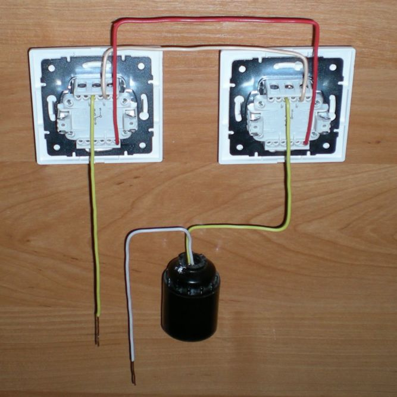
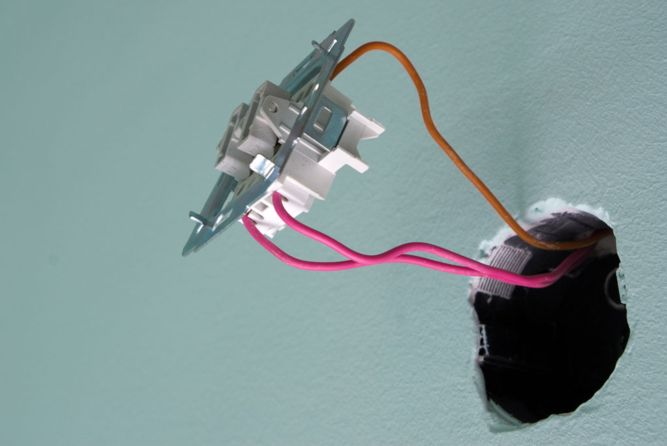

Качественный электромонтаж, Стаж 12 лет. Частный электрик, недорого.
Тел. 8 904 642 08 57. Николай.

Подключить выключатель и лампочку.
Частный мастер.
- Чтобы знать, как подключить лампочку к проводам первоначально нужно помнить о соблюдении техники безопасности и отключить подачу электроэнергии! Подключить лампочку через выключатель можно без помощи профессионального электрика, поэтапно выполняя следующие действия.
Сделать в стенах углубления для установки выключателя, если таковых нет. - От распределительной коробки, в которой есть два электрических провода: ноль – обычно синей маркировки, и фаза – коричневого или красного цвета. Проложить их до нужного места одним из двух способов: открытый – в установленных на стенах специальных каналах из пластика, закрытый – укладка в заранее приготовленные, проштробленные в стенах каналы.
- При закрытом способе укладки проводов общепринято придерживаться горизонтальных и вертикальных направлений, чтобы в дальнейшем было проще найти проводку.
- Нулевой провод прокладывается по стенам и потолку сразу непосредственно к прибору освещения.
- Фаза направляется к выключателю, к входному контакту, а с другого, исходящего контакта, ведется к лампочке. Следует тщательно проследить, чтобы был подключен именно фазный провод. Иначе лампочка будет под напряжением даже в отключенном состоянии, что опасно при её замене.
- Нулевой и фазный провода крепятся к патрону, в который вкручивается лампочка. Подключить выключатель и лампочку получается, образовав единый круг, который будет замыкаться нажатием кнопки включения, подающей фазу, и размыкаться при её выключении.
- Как подключить лампочку правильно электрикам подсказывает схема, а простой обыватель должен просто знать, что фаза идет на цоколь, а ноль – на резьбу.
- После того как будет подключен включатель лампочки, он устанавливается в приготовленную для него коробку и им проверяется работоспособность всей цепи.



Сделать электрику в квартире.
Расценки на электропроводку квартир.
Провести электропроводку в новостройке.
Электромонтаж в частном доме.
Электрика в загородном доме.
Сколько стоит замена электропроводки в двухкомнатной квартире?.
Сколько стоит проводка в 3 ком квартире?
Сколько стоит проложить проводку в четырех комнатной квартире?
Сколько стоит сделать внутреннюю проводку?
Стоимость штробление стен.
Электромонтаж двухкомнатной квартиры.
Замена электропроводки в панельном доме.
Электромонтаж проводов в бане.